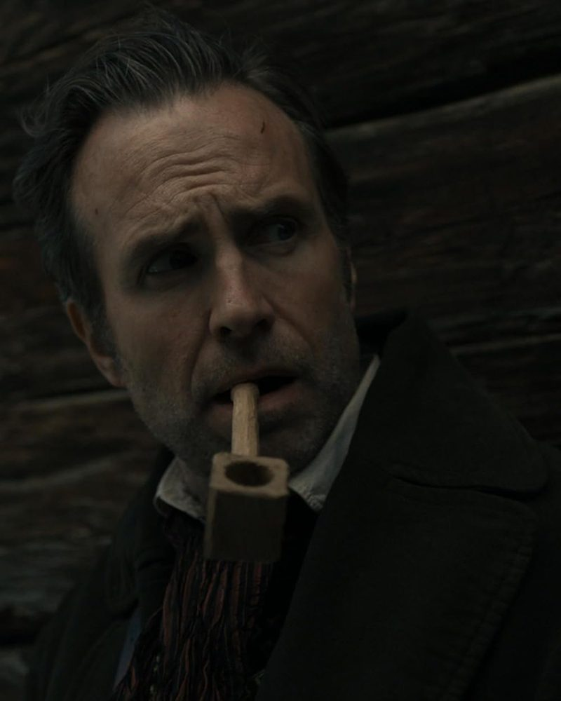
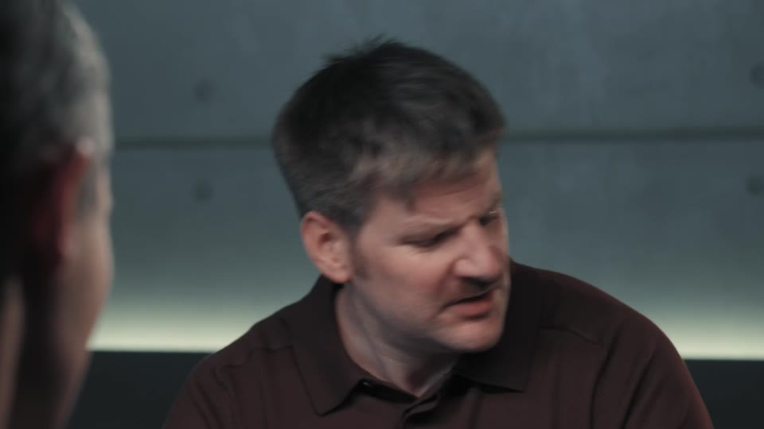
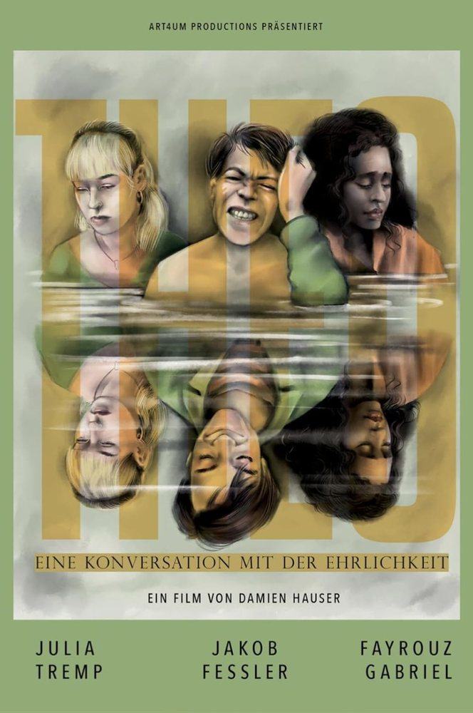
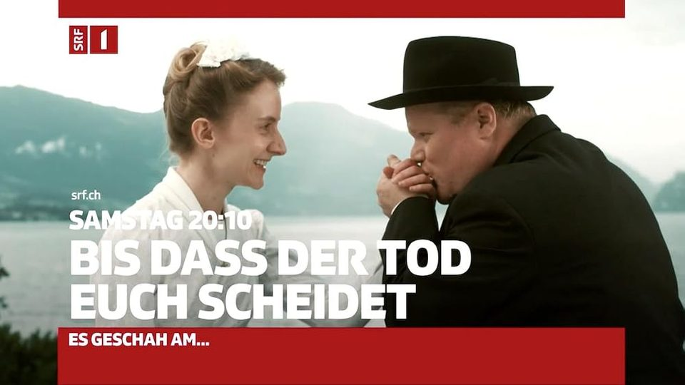

Scene from ON THE HIGH SEAS
About
At 6'5" and with a striking presence, Simon Roffler is often cast in intense, hard-edged roles. His warmth also makes him a compelling choice for an upright investigator or a layered family man.
In 2027, he will appear alongside Rafe Spall in Sky's “The Death of Sherlock Holmes”, directed by Claudia Bluemhuber and Pierre Monnard. He had previously worked with Monnard on the SRF series “Buried Truth”. In Denis Rabaglia's miniseries “On the High Seas”, he played a criminal who works as chief engineer, opposite Carlos Bardem. In “Frieda's Case”, a feature film by Oscar-nominated director Maria Brendle, he played police officer Maier.
He grew up in the countryside of the Zurich Oberland, where cows grazed right in front of the house. He inherited his humour and love of performing from his mother, who always brought fun and good spirits to family gatherings. At the dinner table, he tried out his first comedy routines on his younger sister. They went down so well that the two eventually had to eat in separate rooms.
After secondary school, he completed an IT apprenticeship and, during that time, swapped e-sports for amateur theatre. When he took on a lead role there, he discovered a love of acting that never left him. While working in IT, he auditioned for two years before being accepted by Bern University of the Arts (HKB). While still a student, he performed at Theater Basel in Philipp Stölzl's “Frankenstein”. Later, he played the title role in “Adams Äpfel” at Theater der Künste in Zurich.
His role as David Nagel in Hans Kaufmann's feature film “Der Büezer”, starring Joel Basman, was an important step in his screen career. After that, he focused entirely on film and television. He continues to develop his craft through regular training at the Giles Foreman Centre for Acting in London. For action-heavy roles, he prepares with stunt training tailored to each production.
Simon Roffler lives in Zurich and is entitled to work in Switzerland and the EU.
Selected credits
Television
- 2027The Death of Sherlock Holmes
- 2026Begegnung mit einem Mörder
- 2025On the High Seas
- 2024Der Zufallsmörder
- 2021WAPO Bodensee
- 2020Buried Truth
- 2020Bis dass der Tod euch scheidet
Film
- 2024Frieda's Case
- 2022Theo
- 2019The Working Man
- Height
- 195 cm (6'5")
- Languages
- German, Swiss German, English
- Based in
- Zurich
- Work permits
- Switzerland and EU
- Training
- Bern University of the Arts (HKB); Giles Foreman Centre for Acting, London
- Skills
- Boxing, strength training, stunt training


Showreel
On screen

The Death of Sherlock Holmes










Contact
Representation
German-speaking market
ABRAHAM MANAGEMENTVoltaireweg 9
14469 Potsdam
+49 331 87 70 50 90
office@abraham-management.de
abraham-management.de